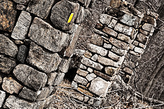
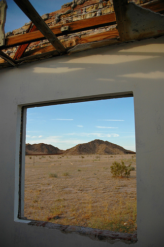

Tratamiento y recuperación de materiales
El estado de deterioro de un edificio localizado en las cercanías al centro histórico en Regina # 27 pertenece, junto con otras 13 casas que están en renta, a los hermanos Camilos o de la Buena Muerte. El deterioro del inmueble o edificio es principalmente a causa de una exposición prolongada a la intemperie o descubierto. El ambiente durante 25 años de abandono estropearon las diversas estructuras y elementos del edificio. Hasta perdió casi en su totalidad las cubiertas y entrepisos [de la planta alta al entresuelo]. Esto causó también la pérdida de las paredes acabadas con cal y una destrucción de la mampostería o construcción de tezontle. El tezontle es una piedra volcánica de color rojizo que se usa en la construcción.
Las paredes expuestas al ambiente se perdieron casi totalmente. Por ejemplo en la planta baja se redujo su presencia a algunos cuartos que anteriormente se utilizaban como accesorias, es decir como habitaciones que tienen entrada distinta y uso separado del resto del edificio principal. El piso existente, presenta exfoliaciones, desprendimientos en las bases y un recubrimiento esmalte sobre la pared como agregado por adecuación. Un detalle único es que en uno de los cuartos se encontró una serie de trazos o motivos vegetales los cuales enmarcan el hueco de la puerta que da salida al segundo cuarto de la accesoria. En el segundo cuarto se harán calas para así descubrir posiblemente que en los otros muros o paredes restantes habrá que hacerse la consolidación y restitución.
Muros: Aplanados y Secciones
Particularidades
Este inmueble está falta de cubiertas que es la principal causa de que se hayan desarrollado deterioros por intemperie ya que la intemperie introdujo numerosas filtraciones y humedades en muros causando la pérdida total de las paredes de cal en los interiores [por ejemplo en las fachadas interiores y en los interiores de la planta alta y entresuelo]. Al no haber hiladas de protección en los muros la disgregación y desprendimientos afectaron algunas secciones superiores y también afectaron muros de mampostería de tezontle y cal con la erosión de las juntas o espacios que quedan entre las superficies de las piedras o ladrillos. A todo este daño se suman los movimientos por sismo y el desarrollo de vegetación parásita. 
Propuesta de acciones de restauración
En el proceso de restauración lo relacionado con la consolidación del sustrato hay que hacerlo en superficie limpia y receptora, así como con características que permitan la adherencia y sustento.
Conceptos Generales
Donde haya pérdida de sección se usará la consolidac